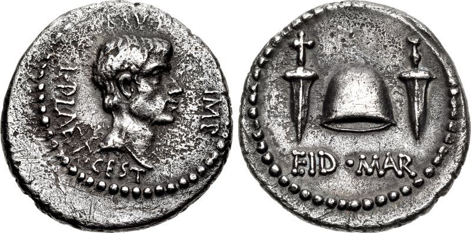

这一页在做什么
上一页讲工资，这一页讲利润：一笔本钱一年能赚几成，由什么决定？斯密的答案和工资正好反着来：国家越富、资本越多，大家抢生意，利润率就越低。利润几乎没法量，他就拿利息当温度计，翻出英国两百年的利息法、荷兰的 2%、孟加拉的六成高利贷。这一章短，读的时候抓两条线：利润率是不是真会一直往下走；斯密为什么在章末忽然挖苦起商人来。
他想证明什么
这一章要证明的只有一句：资本增加会抬高工资，却会压低利润。斯密先承认利润几乎没法量，连做生意的人自己也不一定说得清一年平均赚几成，所以借利息来推：用钱能赚得多的地方，借钱付的利息也多。接着是一串旁证：英国两百年里法定利率一路降，财富一路涨；城里资本多、利润低，乡下反过来；苏格兰、法国比英格兰穷，利息高；荷兰比英格兰富，利息更低。然后是例外：新殖民地地多资本少，工资和利润都高；资本被毁掉的孟加拉，利息高得吓人。最后推到尽头：富到头的国家，工资利润大概都很低，只是或许还没有哪国到过。最后一段是 1778 年第二版加的，斯密忽然转身挖苦商人。
读法：§5 只有两段，先读。§1 是全章的论点，有空就读；§3 的布鲁图、§4 的中国和荷兰好看；§2 全是 18 世纪的利率数字，可以跳过。
斯密拿利息当利润的替身，利率一降，他就说利润率在降。今天的长期数据里两者常常分家：利率几百年来在降，做生意的回报却看不出一条下降线。见「今天怎么看」。
斯密落在哪：资本越多，竞争越激烈，利润率和利息率就越低，所以富国利润低、工资高，新殖民地两样都高；而商人只骂高工资抬价，对自己的高利润一声不吭。
分节地图
这一页是卷一第 9 章，本站切成 5 节。粗体是本站起的节名；「杨译里找」后面是杨译里这一节开头附近的小标题或第一句；灰色的英文是原文这一节开头的几个词。标「先读」的是最短读法。
- 利润和利息一起往下走利润依存于财富的增加和减少THE rise and fall in the …资本一多，竞争压低利润。利润量不出来，斯密改看利息：第 5 段英国法定利率从 10% 降到 5%，他说这些法律「看来非常得当」，因为是跟着市场走的。
- 城乡、苏格兰、法国和荷兰在大城市比在乡村一般需要有…It generally requires a greater stock …四组对照，全是 18 世纪的利率数字，结论第 2 段已经说过，可以跳过。只看第 10 段一句：利润一降商人就喊生意不行，其实正是生意兴旺的结果。
- 新殖民地、孟加拉和布鲁图在北美和西印度各殖民地…In our North American and West …两种例外：北美地多资本少，高工资和高利润并存；资本被毁的孟加拉，放债利息四到六成。段末「品德高尚的布鲁图」是反话，值得一看。
- 富到头的国家：中国和荷兰在一个国家财富已达到其土壤…In a country which had acquired …富到头的国家工资利润大概都很低，但斯密说「或许」还没有哪国到过。中国被法律和制度卡在较低的上限，荷兰人人做生意。第 20 段的比喻最好玩。
- 商人只抱怨别人的工资在迅速走向富裕的国家…In countries which are fast advancing …高利润比高工资更会抬价，斯密拿单利和复利作比，这个算法有毛病；最后四句挖苦商人只骂工资、不提自己的利润，是全书名句。
先用中文过一遍：这一页的概念
这一页用到的三个概念。讲的是概念本身；每块的「今天」说今天怎么看它。
§1利润率下降 falling rate of profit
利润率是一笔本钱一年赚回的钱占本钱的比例：一百镑本钱一年赚十镑，利润率就是一成。斯密的道理很朴素：一个行当里有钱的商人越来越多，大家抢同一批顾客、同一批工人，卖价被压低，工钱被抬高，每一百镑本钱赚到的就少了；各行的资本都在增加，各行的利润率也都往下走。要分清：利润率降，不等于赚的总数降。本钱大了，薄利照样能越滚越多，斯密在第 11 段引俗话说「钱生钱」，难的是挣到头一小笔。
今天：马克思在《资本论》第三卷把它改造成「利润率趋向下降的规律」，原因换成机器越用越多。今天的长期数据里，利率几百年来确实在降；利润率有没有一条下降线，至今争论不休。
在这一页：第 2 段提出，第 3–6 段拿英国利率作证，第 14 段推到富到头的国家。工资那一半见页 05 的三种状态。
§1利息和利润 interest, or the use of money
利息是借钱用一段时间要付的价钱。斯密在页 03（第 6 章）说过：借钱的人拿钱去做生意赚利润，分一部分给出借人，就是利息，所以利息是从利润里分出来的。利润难量，利息却有公开的行情，斯密就拿利息当利润的温度计：利息高，说明用钱能赚得多。他还记下英国商人的行话：利润是利息的两倍，就算「公道合理」的利润。
今天：今天的利率还要听央行的，看储蓄多寡和人们怕不怕风险，和做生意的回报可以分道扬镳：1980 年代中期以后发达国家的安全利率一路走低，股票和住房的长期回报却没跟着降。
在这一页：第 4 段立下「利息跟着利润走」的原则，第 18–22 段讲两者的比例。利息的详论在卷二第 4 章（页 13）。
§1法定利率上限 usury laws; the legal rate of interest
法律规定借钱最多只能收多少利息，超过就算放高利贷（usury），要受罚。中世纪的教会把收利息看成罪，后来各国改成设上限。斯密在这一章说了两件事：法律全面禁止利息，挡不住借贷，只会把利息抬得更高，因为放债的人还要算上违法的风险；英国历次降低上限是跟着市场利率走的，所以「看来非常得当」。他反对的是禁止，不是上限：卷二第 4 章他主张上限定得比最低的市场利率略高一点。
今天：很多国家仍对贷款利率设上限。世界银行 2018 年的综述说，上限能压低利率、遏制掠夺性放贷，但常见的副作用是手续费变多，小额和高风险的借款人更难借到钱。
在这一页：第 5 段是英国利息法的历史，第 16–17 段讲法律的缺陷和禁令怎样抬高利息。
故事和背景
这一页里的故事和 18 世纪的东西，按在书里出现的顺序排。
§1从 10% 到 5%：英国的利息法
1545 年，亨利八世的议会宣布超过 10% 的利息非法。Cannan 在注里说，它的实际效果等于准许收 10% 以内的利息。1552 年，爱德华六世时的议会出于斯密说的「宗教热忱」，禁止一切利息；1571 年伊丽莎白的议会又恢复 10% 的上限，法律的序言抱怨禁令没起什么好作用，高利贷反倒更猖獗了。此后上限一路往下：1624 年 8%，复辟后 6%，1713 年安妮女王时 5%。斯密说这些法律看来都很得当，因为它们跟在市场利率后面，不走在前面；七年战争前，信用好的人借钱只要三厘半到四厘半。5% 的上限一直用到 1854 年才废除。
§3「品德高尚的布鲁图」
第 13 段先讲孟加拉：资本被毁的地方，放给农民的钱利息四成、五成、六成，拿下一季收成作抵押（那里的饥荒见页 05）。接着斯密从西塞罗的书信里搬出一个罗马人：「品德高尚的布鲁图」在塞浦路斯放债，收 48% 的年息。这位布鲁图就是公元前 44 年刺杀恺撒的那一位，以正直出名，斯密是在说反话。西塞罗公元前 51 到 50 年做西里西亚总督，塞浦路斯归他管。布鲁图借钱给萨拉米斯城，自己躲在代理人 Scaptius 后面。西塞罗的告示把利息限在每年 12%，Scaptius 咬定借据上的每月 4%。西塞罗在信里说，此人在前任总督手下带过几队骑兵，把萨拉米斯的元老围在议事厅里，饿死了五个。Cannan 注里算过：按 12%，六年的欠款差不多翻一倍；按 48%，要翻十五倍以上。

§4只开一两个港口的中国
第 15 段斯密说，中国看来早已停滞，大概早就富到了它的法律和制度所容许的上限；换一套法律和制度，它的土壤、气候和位置本来容得下多得多。他点了三条：轻视对外贸易，只准外国船进一两个港口；富人有保障，穷人和小本生意却随时可能被下级官吏借司法之名洗劫；于是富人垄断各行，利润很高，据说普通利息是 12%。「一两个港口」说的是实情：1757 年乾隆下令西洋商船只准到广州贸易，史称「一口通商」，一直维持到鸦片战争后的 1842 年。斯密的中国材料都是二手的；中国是不是真的停滞，见页 05。
原典：斯密的原话
这本书是公版书，下面整段放斯密的原文，配本站的白话译。灰字说它在杨译的哪里，最后一行是这段里今天容易读错的 18 世纪词。
§5他们只抱怨别人的
全章最常被引用的几句，在第 24 段末尾，前面是亚麻布一道道加价的算例。这一段是 1778 年第二版加的。在杨译这一章的最后一段。
In raising the price of commodities the rise of wages operates in the same manner as simple interest does in the accumulation of debt. The rise of profit operates like compound interest. Our merchants and master-manufacturers complain much of the bad effects of high wages in raising the price, and thereby lessening the sale of their goods both at home and abroad. They say nothing concerning the bad effects of high profits. They are silent with regard to the pernicious effects of their own gains. They complain only of those of other people.
本站译：在抬高商品价格这件事上，工资上涨的作用，就像欠债越滚越多时的单利；利润上涨的作用，像复利。我们的商人和工场主老是抱怨，工资高了，把价格抬上去，害得他们的货在国内国外都卖得少了。高利润有什么坏处，他们一个字也不提。自己赚头的害处，他们闭口不谈；他们只抱怨别人的。
单利和复利的比喻不严密。Cannan 在注里算过：工资翻一倍、利润率不动，价格涨得比利润率翻一倍还多；而且前一道工序多付的工钱，后面的老板也要照样加上利润。比喻站不住，挖苦却站得住，见「今天怎么看」。
- master-manufacturers工场主，雇工人干活的制造业老板
- pernicious有害的
- gains赚头、得利
§4不做生意就不时髦
富到头的国家是什么样子：利息低到除了顶有钱的人，谁也没法靠吃利息过日子，其余的人只好自己干。这里取第 20 段的后半。在杨译这一章讲荷兰人人经商的那一段。
All people of small or middling fortunes would be obliged to superintend themselves the employment of their own stocks. It would be necessary that almost every man should be a man of business, or engage in some sort of trade. The province of Holland seems to be approaching near to this state. It is there unfashionable not to be a man of business. Necessity makes it usual for almost every man to be so, and custom every where regulates fashion. As it is ridiculous not to dress, so is it, in some measure, not to be employed, like other people. As a man of a civil profession seems awkward in a camp or a garrison, and is even in some danger of being despised there, so does an idle man among men of business.
本站译：所有家产不多不少的人，都得亲自照管自己的本钱怎么用。几乎人人都得是个生意人，或者做点什么买卖。荷兰省看来正在接近这种状态。在那里，不做生意是不时髦的。形势所迫，几乎人人都这样，于是成了常事，而时髦到哪里都是由习惯定的。不穿衣服是可笑的，不像别人那样有事可干，多少也有点可笑。一个文职的人到了兵营或要塞里，显得别别扭扭，甚至有被人瞧不起的危险；一个闲人在生意人中间也是这样。
斯密说的是一个推想中的终点，荷兰只是「看来正在接近」。Cannan 注里引了 1729 年的一本书，把荷兰人人经商归因于缺少好地，和斯密给的原因不一样。
- man of business生意人，做买卖、经营产业的人
- civil profession文职，这里和军人相对
- garrison要塞、驻军的地方
译本勘误
杨译这一章整体可靠。下面只收会把人读歪的一处。灰字是英文原文那一处的几个词；方框里是杨译的原句，在电子书里搜它。
§4consideration 是报酬，不是「考虑」误译
without such a consideration for the
译本：「不考虑自己的货币使用是否恰当」
consideration 在这里是商业和法律用语：给对方的报酬、代价。原文说，没有人肯白借钱，一定要收一笔报酬，多少既看用这笔钱能赚多少，也看规避法律有多难、多危险。译成「考虑」，句子成了放债人在掂量钱用得恰不恰当，正好丢了这一段的要点：禁令让利息里多出一份违法风险费。
今天怎么看
这一章的主要说法和今天的判断。每条标签判的是那条论点，五种标签的意思：
- 成立今天的经济学和证据支持这句话。
- 部分成立大方向对，细节或适用范围要改。
- 过时说的是 18 世纪的世界，当时也许对，今天的制度和技术已经变了。
- 被推翻后来的经济学或证据说明它错了。
- 有争议经济学界至今没有定论，两边各有代表性的研究。
资本越积越多，资本家互相竞争，利润率趋于下降
同一行当里资本多了，富商们互相竞争，压低利润；各行资本都增加，各行利润率都降。英国两百年里利率一路降、财富一路涨，是他的证据。今天看，利率那一半有几百年的数据支持；利润率那一半，两派至今各有数据，见下面的卡。
§1 第 2–6 段利润的高低可以从利息推知，利息跟着利润升降
第 4 段他说这可以「定为一条原则」，第 22 段又承认两者的比例会变。今天看，在斯密的时代这大致说得通，借钱的多半是拿去做生意的人；可今天的利率还听央行的、看储蓄多寡，1980 年代中期以后发达国家的安全利率一路走低，股票和住房的回报却没跟着降。
§1 第 4 段、§4 第 22 段法律禁止收利息挡不住借贷，只会把利息抬高
总有人非借不可，放债的人就要多收一份违法的风险费；斯密还引孟德斯鸠讲伊斯兰国家的高利息。今天看，大方向有证据。斯密在卷二说，上限定得比市场利率还低，效果就和禁止差不多；世界银行 2018 年的综述也发现，上限压得太紧时，手续费变多，小额和高风险的借款人更难借到钱。斯密反对的是全面禁止，并不反对上限，见下面的看法。
§4 第 16–17 段高利润抬价像复利，所以比高工资更会抬高价格
亚麻布要过洗麻、纺纱、织布几道工序，每道的老板都按垫付的全部成本加利润，利润率一涨就层层滚上去。今天看，这个推理不成立：Cannan 在注里算过，关键是涨多少，工资翻一倍时价格涨得比利润率翻一倍还多；何况前一道多付的工钱，后面的老板也照样加利润，工资一样在「滚」。
§5 第 24 段书里的说法：资本越积越多，资本家互相竞争，利润率趋于下降
- 书里
- 第 2、6、14 段。第 3–4 段他承认平均利润没法准确算，只能从利息推。
- 当时
- 英国的法定最高利率从 1545 年的 10% 降到 1713 年的 5%，七年战争前政府借钱只要 3%；荷兰政府借钱只付 2%（第 5、10 段）。
- 今天
- 利率这一半有长期数据支持：Schmelzing 2020 年为英格兰银行重建了 1311 年以来的全球实际利率，几百年来平均每年下降约 0.6 到 1.6 个基点（1 个基点是 0.01 个百分点）。可利率是安全借贷的价钱，不等于做生意的回报。利润率这一半，两边各有数据。认为在降的：马克思以来的一派，比如 Maito 2014 年估算 14 个国家 19 世纪以来的利润率，看到一条下降的趋势。认为没降的：Jordà 等人 2019 年在《经济学季刊》算了 16 个发达国家 1870 到 2015 年的股票和住房回报，实际年回报一直在 6% 到 8% 上下，看不出长期趋势。两边量的东西不一样，一边是利润占资本存量的比例，一边是投资者拿到的全部回报，这也是这道题难有定论的原因。核对于 2026-10。依据：Schmelzing, Bank of England Staff Working Paper 845, 2020；Maito, MPRA Paper 55894, 2014；Jordà, Knoll, Kuvshinov, Schularick & Taylor, The Rate of Return on Everything, Quarterly Journal of Economics, 2019。
斯密反对管利率吗
主流看法：边沁 1787 年写《为高利贷辩护》，书里专门有一封写给斯密的信，说按斯密自己的道理，利率上限也该废掉。英国 1854 年废除了高利贷法。今天两种做法都有：世界银行 2014 年统计，至少 76 个国家仍有某种贷款利率上限。
斯密的看法：这一章第 5 段说英国的利息法看来非常得当，第 17 段说全面禁止只会抬高利息。卷二第 4 章他主张上限应略高于最低的市场利率，但不能高太多，否则钱会流到挥霍的人和搞冒险计划的人手里。
本站的评论：斯密在这里不是自由放任的吉祥物。他信竞争，却担心一种具体的毛病：利率一放开，肯出高息的往往是最不靠谱的借款人，稳健的人反倒被挤出去。今天这叫逆向选择，Stiglitz 和 Weiss 1981 年证明，银行会因此宁可限量放贷，也不一味提高利息。斯密自己也说，上限定在最低市场利率之下，效果和全面禁止差不多；边沁更进一步，说凡是上限都会挡住有用的借款，尤其是借给搞新事业的人。今天各国争论小额高息贷款要不要封顶，两边说的还是斯密和边沁那两套话。
本站的总体看法：这一章短，先读 §5，有空读 §1 和 §3。「利润率必然下降」当成斯密那个时代的观察来读：利率确实在降，利润率是不是也在降，至今说不清。最值得带走的是章末那几句：斯密信市场，却不信商人。
精彩回顾
隔几周回来时看这里。想不起来，点节号回到那一节。
一句话：资本越多，利润率越低；斯密拿利息作证，顺手挖苦了只骂工资的商人。
英国法定最高利率两百年里从 10% 降到 5%；斯密说这些法律跟着市场走，所以得当。
§1刺杀恺撒的布鲁图借代理人在塞浦路斯放债，要 48% 的年息，还饿死过元老。斯密叫他「品德高尚的布鲁图」，是反话。
§3荷兰富到利息极低，只有最富的人能吃利息，闲人在生意人中间像文官进了兵营。
§4商人抱怨高工资抬价，对自己高利润的害处闭口不谈。比喻算错了，挖苦没错。
§5